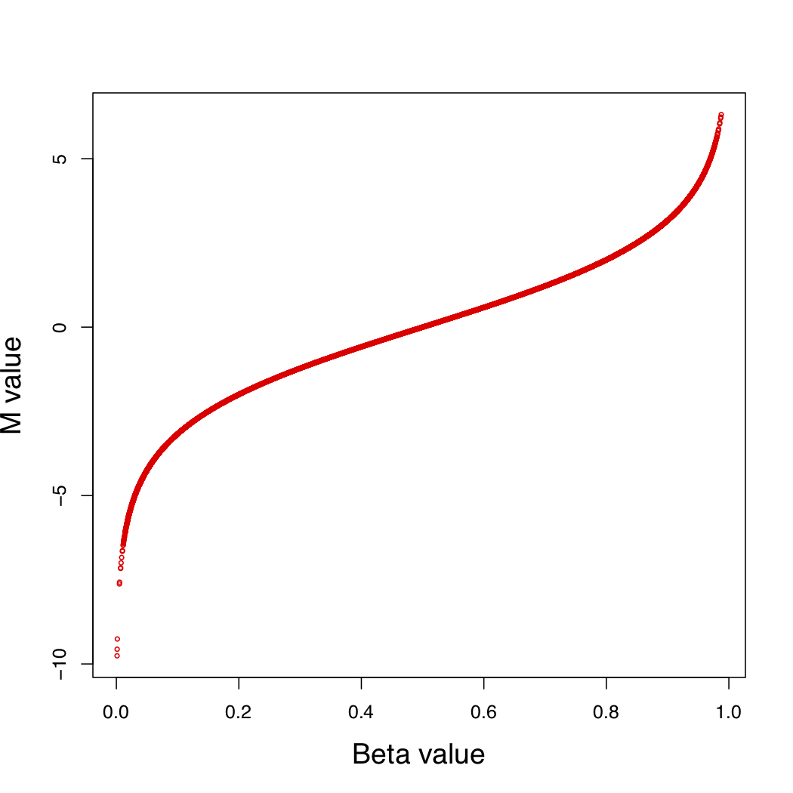

1. Input Files and Data Formats
CpGtools supports several types of DNA methylation and genomic data, including Beta-values, M-values, methylation proportion/count data, and BED files.
1.1. Matrix Orientation
For most CpGtools commands that operate on DNA methylation matrices, the input matrix is expected to have:
CpGs (or genomic loci) in rows
Samples in columns
The first row should contain sample IDs, and the first column should contain CpG IDs or genomic-locus identifiers. For example:
CpG_ID Sample_1 Sample_2 Sample_3 ...
cg00000029 0.432 0.517 0.481 ...
cg00000108 0.821 0.793 0.806 ...
cg00000165 0.135 0.164 0.142 ...
...
Missing values are generally represented as NA or NaN. Some commands
also support compressed input files and automatically detect common delimiters
such as tabs and commas.
Refer to the documentation for each command for command-specific requirements.
1.2. Beta Values
A Beta-value represents the fraction of methylation at a CpG site or genomic locus. It ranges from 0 to 1, where values close to 0 indicate hypo (low) methylation and values close to 1 indicate hyper (high) methylation.
For array-based methylation data:
C = intensity of the methylated allele
U = intensity of the unmethylated allele
The Beta-value is defined as:
For sequencing-based data, the same concept can be applied using methylated and unmethylated read counts.
1.3. M Values
An M-value represents the \(\log_2\) ratio of methylated to unmethylated probe intensities or read counts.
Let:
C = intensity or read count of the methylated allele
U = intensity or read count of the unmethylated allele
w = an offset (pseudocount) added to prevent division by zero and reduce instability when intensities or read counts are small
The M-value is calculated as:
Unlike Beta-values, which are bounded between 0 and 1, M-values are unbounded and can take both positive and negative values.
1.4. Converting Between Beta-values and M-values
When no offset is included in the transformation, Beta-values and M-values are related by:
and:
Thus, Beta-values and M-values can be mathematically transformed into one another, subject to the assumptions of the transformation.
The following figure illustrates their relationship:
{kind=link}

1.5. Proportion Values
For bisulfite sequencing data, such as RRBS or WGBS, CpGtools may represent methylation measurements using methylated-read and total-read counts.
A proportion value is represented as two integers separated by a comma:
m,n
where:
m = number of methylated reads, with \(0 \leq m \leq n\)
n = total number of reads, with \(n \geq 0\)
For example:
0,10 1,27 2,159
7,7 17,19 30,34
The first row contains examples of relatively low methylation, whereas the second row contains examples of relatively high methylation.
When \(n > 0\), the corresponding methylation fraction is:
Unlike a Beta-value alone, the m,n representation retains information
about sequencing depth. For example, 1,2 and 50,100 both correspond
to a Beta-value of 0.5, but they are supported by very different numbers of
sequencing reads.
Commands that require proportion/count data expect the m,n representation
rather than Beta-values. Refer to the documentation for the individual command
to determine which input representation is required.
1.6. BED Files
The BED (Browser Extensible Data) format is commonly used to describe genomic intervals. Each line represents one genomic feature or interval and contains between 3 and 12 standard BED fields, depending on the BED variant.
BED coordinates are 0-based and half-open. The start coordinate is excluded and the end coordinate is included.
For example:
chr1 10 15
represents the BED interval chr1:11-15 (1-based both start and end are included)
1.6.1. BED Variants
1.6.1.1. BED12
The standard 12-field BED representation. It can describe features containing multiple blocks, such as genes or transcripts with multiple exons.
Detailed specifications are available from the UCSC BED format documentation.
1.6.1.2. BED3
BED3 contains the three required BED fields:
chrom chromStart chromEnd
Each line represents a single genomic interval.
1.6.1.3. BED3+
BED3+ contains at least the three required BED fields:
chrom chromStart chromEnd ...
For CpGtools commands that accept BED3+ input, additional columns that are not required by the command are ignored.
1.6.1.4. BED6
BED6 contains six fields:
chrom chromStart chromEnd name score strand
This representation adds a feature name, score, and strand to the genomic interval.
1.6.1.5. BED6+
BED6+ contains at least the six BED6 fields:
chrom chromStart chromEnd name score strand ...
For CpGtools commands that accept BED6+ input, additional columns that are not required by the command are ignored.
1.7. Command-Specific Formats
The formats described above are general conventions used throughout CpGtools. Individual commands may require additional columns, metadata files, genomic annotations, count data, or a particular matrix representation.
Although most CpGtools commands expect CpGs in rows and samples in columns, some commands use specialized input formats. Users should therefore check the documentation for the specific command before running an analysis.
Use the -h or --help option to display the input requirements and
available options for a command. For example:
beta_impute -h
beta_deconvolution -h
epical -h
dmc_bb -h